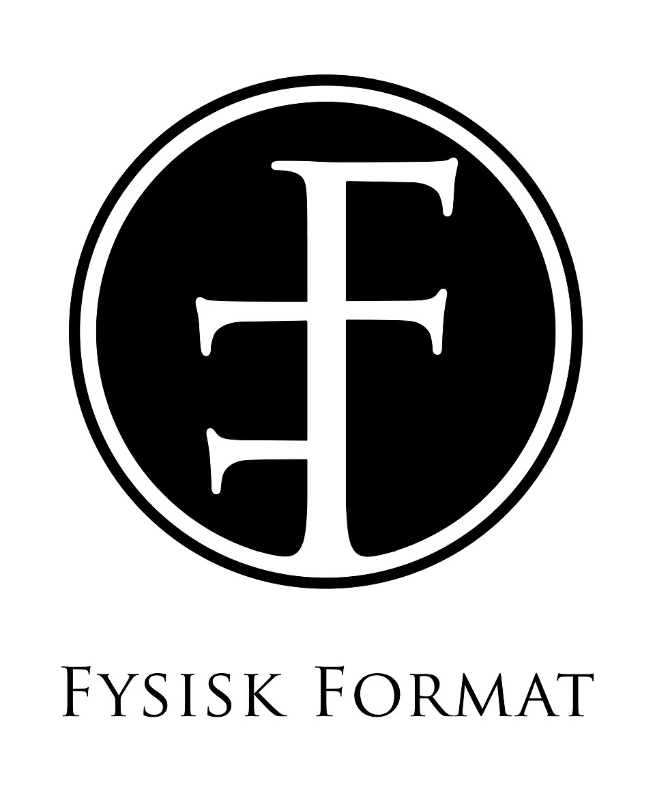

홈 > 브랜드 매거진 > Fysisk Format
Fysisk Format
퓌시스크 포르마트(Fysisk Format)는 2008년 노르웨이 오슬로에서 설립된 인디 음반 레이블이다. 펑크·하드코어·메탈·인디 록을 다루는 노르웨이의 독립 레이블이다.
산업 분야 미디어·엔터테인먼트 · 공개 등급 디렉토리 · 브랜드 평가 3.2 ★

한눈에 보는 브랜드
퓌시스크 포르마트(Fysisk Format)는 2008년 노르웨이 오슬로에서 설립된 인디 음반 레이블이다. 펑크·하드코어·메탈·인디 록을 다루는 노르웨이의 독립 레이블이다.
브랜드 관점
퓌시스크 포르마트는 펑크·메탈·인디를 아우르는 노르웨이 오슬로의 독립 레이블이다. 설립·운영 주체, 주력 장르, 대표 아티스트를 함께 보면 미디어·엔터테인먼트 안에서의 위치가 또렷해진다.
시작과 성장
2008년 크리스티안 칼레비크가 오슬로의 레코드숍 지하에서 설립했다. 오라브로트, 오쿨토크라티, 블러드 커맨드 등 노르웨이 펑크·메탈·인디 록을 발매해 왔다.
브랜드 아이덴티티
Fysisk Format의 아이덴티티는 브랜드명, 로고 사용 여부, 업종 언어, 국가적 배경을 중심으로 정리됩니다. 공개 로고 자산은 추후 권리 확인 후 보강할 수 있도록 텍스트 메타데이터 중심으로 관리합니다.
확장 지식
노르웨이의 펑크·메탈·인디 독립 레이블이다.
제품과 서비스
펑크·하드코어·메탈·인디 록 음반을 발매한다. 오라브로트, 오쿨토크라티 등이 대표 아티스트다.
사람들
크리스티안 칼레비크가 2008년 오슬로에서 설립했다.
현재 상태
타임라인
정리된 연도형 이벤트가 없습니다.
BI/CI 변천사
함께 읽을 브랜드
 미디어·엔터테인먼트 · 디렉토리DJM Records
미디어·엔터테인먼트 · 디렉토리DJM RecordsDJM 레코드(DJM Records)는 1969년 영국에서 음악 출판사 딕 제임스 뮤직 산하로 만들어진 음반 레이블이다. 엘튼 존의 초기 영국 음반을 발매한 것으로...
 미디어·엔터테인먼트 · 디렉토리AFM 레코드
미디어·엔터테인먼트 · 디렉토리AFM 레코드AFM 레코드(AFM Records)는 1990년대 독일에서 설립된 헤비메탈 전문 음반 레이블이다. U.D.O.·도로 등을 발매한 독일 메탈 레이블로, 현재 소울푸드...
 미디어·엔터테인먼트 · 디렉토리Blood and Fire
미디어·엔터테인먼트 · 디렉토리Blood and Fire블러드 앤 파이어(Blood and Fire)는 1993년 영국 맨체스터에서 설립된 레게·덥 재발매 레이블이다. 자메이카 루츠 레게의 명반을 복각해 온 레이블이다.
Bo
Bonsound
미디어·엔터테인먼트 · 디렉토리Bonsound봉사운드(Bonsound)는 2004년 캐나다 퀘벡 몬트리올에서 설립된 인디 음반 레이블이다. 음반·매니지먼트·공연을 아우르는 퀘벡의 주요 인디 레이블이다.
Cy
Cyclone Empire
미디어·엔터테인먼트 · 디렉토리Cyclone Empire사이클론 엠파이어(Cyclone Empire)는 1996년 독일에서 설립된 익스트림 메탈 레이블이다. 데스·둠·블랙 메탈 등을 다루는 독일의 독립 메탈 레이블이다.
 미디어·엔터테인먼트 · 디렉토리Equal Vision Records
미디어·엔터테인먼트 · 디렉토리Equal Vision Records이퀄 비전 레코드(Equal Vision Records)는 1991년 레이 카포가 미국 뉴욕주 올버니에서 설립한 하드코어 레이블이다. 포스트하드코어·하드코어를 대표하...
 미디어·엔터테인먼트 · 디렉토리Megaforce Records
미디어·엔터테인먼트 · 디렉토리Megaforce Records메가포스 레코드(Megaforce Records)는 1982년 존·마샤 자줄라 부부가 미국에서 설립한 헤비메탈 레이블이다. 메탈리카의 데뷔작 'Kill 'Em All...
 미디어·엔터테인먼트 · 디렉토리Pi Recordings
미디어·엔터테인먼트 · 디렉토리Pi Recordings파이 레코딩스(Pi Recordings)는 2001년 미국 뉴욕에서 설립된 아방가르드 재즈 레이블이다. 헨리 스레드길 등 혁신적 재즈를 다루는 독립 레이블이다.